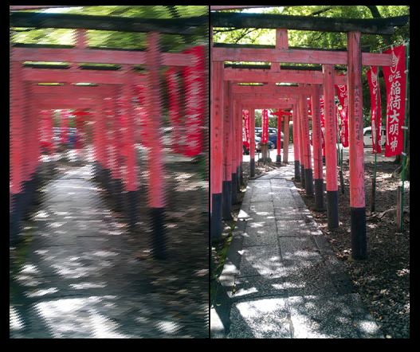
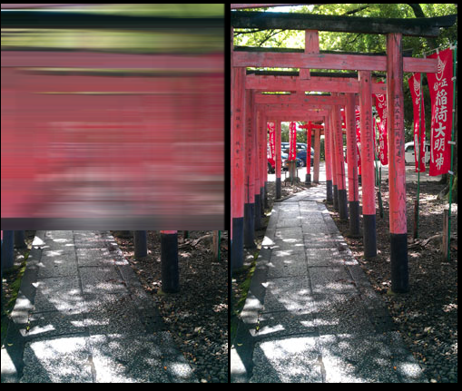
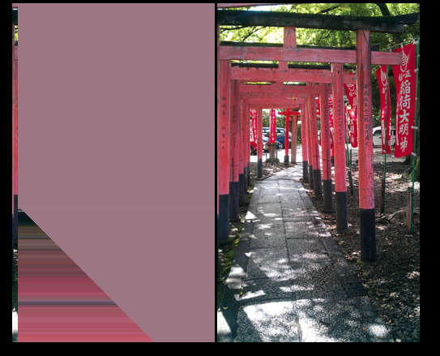

Instagram in the browser
Team X
July 24, 2012
Team X
- Kevin Stevens
- Clare Hyam
- Chloe Watts
- Jasal Vadgama
Task
- Your task will be to recreate Instagram (or something like it) in the browser. Your app must allow a user to apply different filters onto their images. Applying filters to videos is a bonus.
Things to consider
- How will you source images?
- What filters will you apply?
- How will you save / share modified images?
Why we chose this task
- Something we had dabbled in, so fitted our skill set
- Looked interesting
- Best result in time allowed
- Hope Facebook will buy it for millions
The plan
- HTML5 canvas
- File API
- Phase 1: create some code to manipulate photos
- Phase 2: some way of sharing the finished images
STOP!
Demo time...
The filters
- Pixel manipulation for Greyscale, Brightness, and RGB channels
- Borders are paths drawn around the image with the stroke adjusted to set the width
- Rounded corners are an extension of borders - uses global-composite-operations to cut out the outside of the image and layer a color underneath
The filters
- Sepia ended up being a greyscale filter with a sepia tone overlay
- Vignette is a combination of two radial gradients layered on to the image
Saving images
- Saved in local storage
- Images encoded as base64
- Uses a lot of space so can only store approx 2 images at a time
What might have been...
- Image downloading
- Drag and drop
- Gaussian blur



Future versions
- Image based borders
- Saving custom filters
- Server side and DB components to allow the user to store more images
- Unique URLs to allow sharing on Twitter and Facebook
- Webcam integration
Thanks!